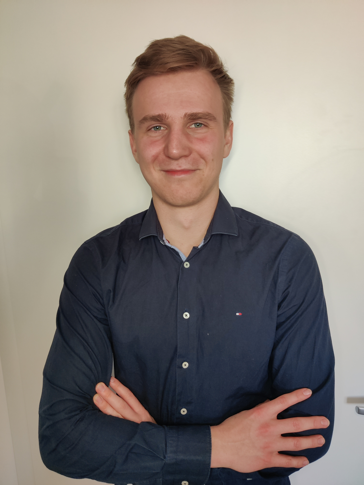

Malte Reßler

Ausbildung
2020 – 2023
Wirtschaftsingenieurwesen an der Dualen Hochschule Baden-Württemberg (DHBW)
Angestrebter Abschluss: Bachelor of Engineering
Kenntnisse und Fähigkeiten
Fremdsprachen
Englisch verhandlungssicher in Wort und Schrift
Französisch ausbaufähig in Wort und Schrift
Kenntnisse
Python
Power BI
Webdesign
Microsoft Office
Zertifikate
AEVO-Schein (Ausbilderschein)
Berufliche Laufbahn
August 2020 - heute
ABB AG
Dualer Student
- Consulting - Einsatz im Prüffeld
- Consulting - Erstellung eines Dashboards mit Power BI für ausgewählte KPIs
- Projektmanagement - Erstellung von Prozessbeschreibungen für Projektmanagementprozesse
- Vertrieb - Erstellung von Ausschreibungstexten für Niederspannungsanlagen
Contact Me